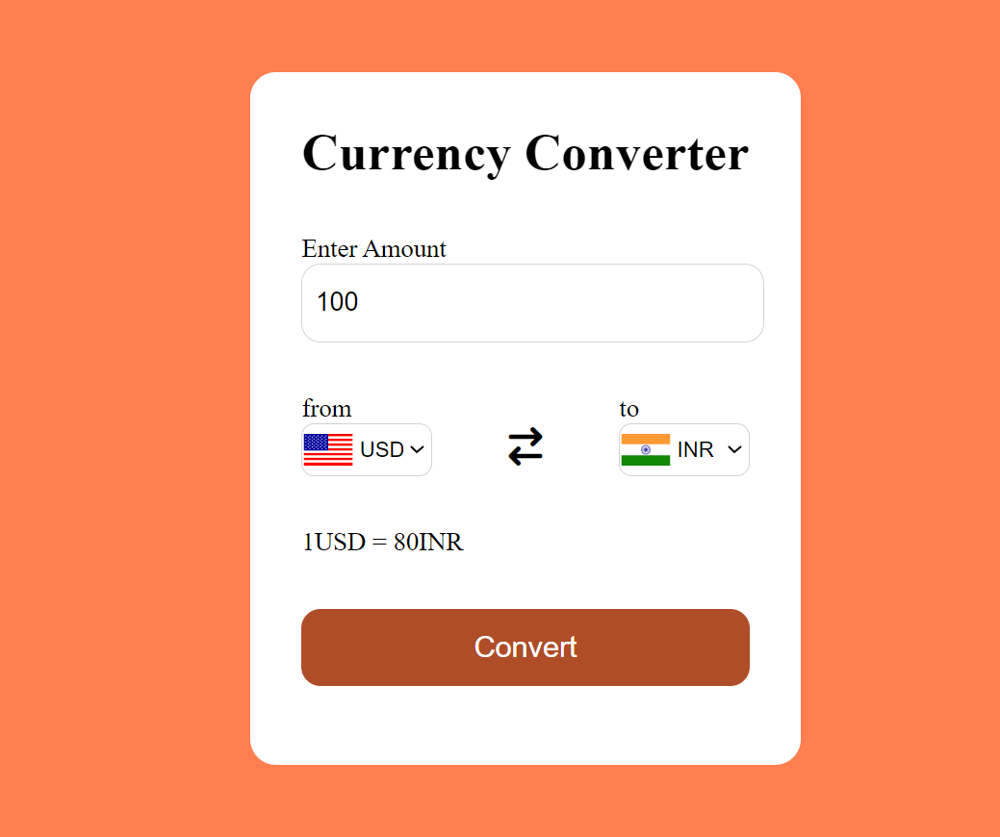
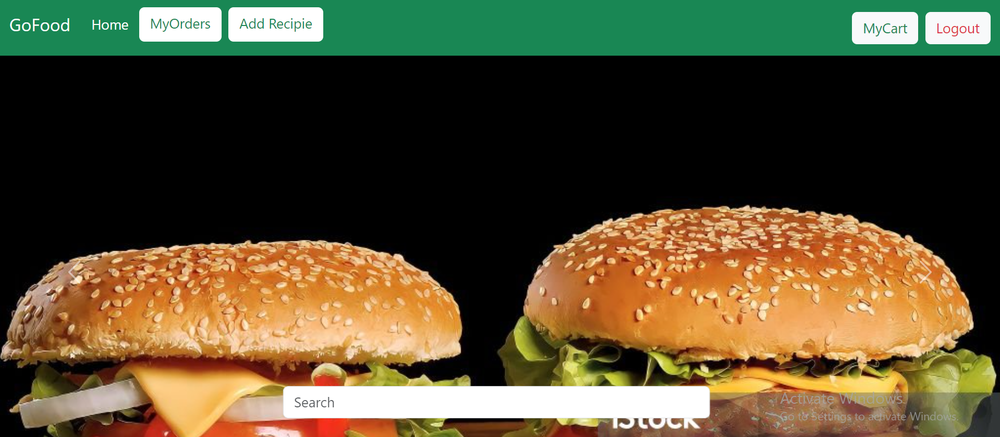
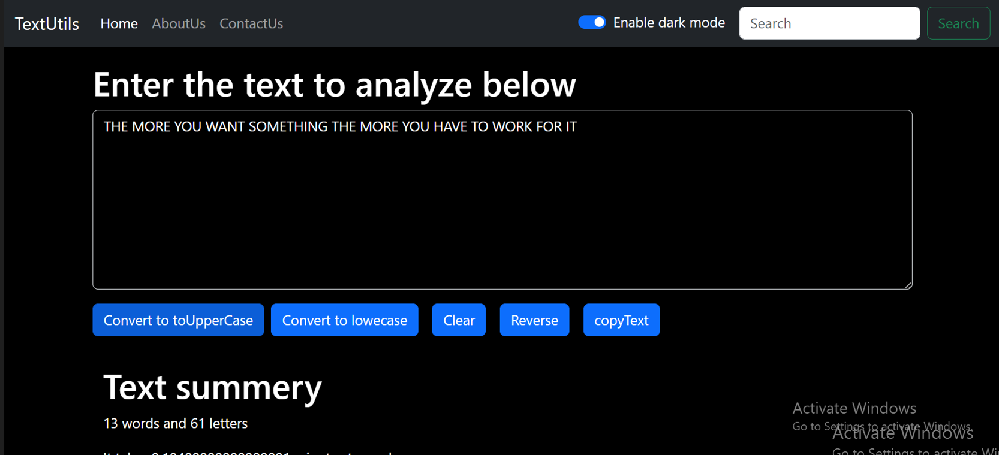

The Currency Converter app simplifies global finance by providing instant, accurate currency
exchange rates at your fingertips. Whether you're traveling, shopping internationally, or managing
investments, this app ensures you're always informed. With support for multiple currencies and
real-time updates, converting between different monetary units is effortless. Customize your
favorite currencies for quick access and stay updated with historical trends. From casual travelers
to seasoned traders, the Currency Converter app empowers users to make informed financial decisions
anytime, anywhere.

GoFood is your ultimate companion for exploring a world of culinary delights at your fingertips.
Whether you're craving local favorites or adventurous global cuisines, GoFood connects you with a
diverse array of restaurants, cafes, and eateries in your area. Discover new flavors, browse menus,
and effortlessly place orders for delivery or pickup. With intuitive navigation and real-time
updates, GoFood ensures a seamless dining experience right from your smartphone. Savor convenience
with every bite – GoFood, where delicious meets effortless.

Text Utils is a versatilewebapplication designed to
streamlin text manipulation and analysis. It
offers a suite of tools fortransforming and
managing text,including featuressuch as text
formatting, case conversion, wordcount, character
count, and whitespace removal. With a
user-friendly interface,Text Utils allowsusers to
efficiently perform tasks likeconverting textto uppercase or lowercase, capitalizing
sentences,trimming
spaces, and analyzing textual data.
Ideal for writers, developers, and
anyone needing quick text processing, Text Utils enhances
productivity by simplifyingeverydaytext-related tasks.